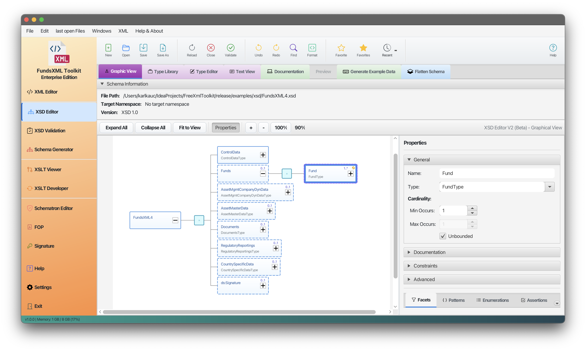
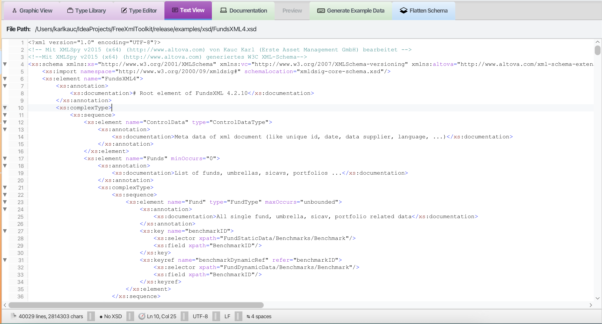

XSD Tools¶
Last Updated: December 2025 | Version: 1.1.0
This part of the application provides tools for working with XML Schemas (XSD). These tools help you understand, document, and use XSD files effectively.
Tab Overview¶
The XSD Tools section contains several tabs, each with a specific purpose:
| Tab | Description |
|---|---|
| Graphic View | Visual schema editor with interactive tree |
| Type Library | Browse and analyze all types in your schema |
| Type Editor | Edit ComplexTypes and SimpleTypes graphically |
| Text View | Raw XSD source code editor |
| Schema Analysis | Statistics, constraints, validation, and quality checks |
| Documentation | Generate HTML, Word, or PDF documentation |
| Preview | Preview generated documentation |
| Generate Example Data | Create sample XML from schema |
| Flatten Schema | Merge includes into one file |
1. Graphic View¶
The Graphic View lets you explore and edit your schemas visually.
 The XSD schema displayed as an interactive tree
Features¶
- Visual Tree: See your XSD as an interactive, hierarchical tree
- Easy Navigation: Click on elements to explore their structure
- Edit Documentation: Add or edit documentation for schema elements
- Add Examples: Include example values for elements
- Drag & Drop: Reorganize elements by dragging them
- Full Undo/Redo: Go back and forward through your changes
How to Use¶
- Go to the XSD tab
- Open your XSD file
- The schema appears as an interactive tree
- Select an element by clicking on it
- Edit properties in the panel on the right
- Add children using the context menu (right-click)
- Drag elements to move them
Tips¶
- Double-click an element to edit its name
- Right-click for a context menu with common actions
- Ctrl+Z to undo, Ctrl+Y to redo
- Ctrl+S to save (a backup is created automatically)
2. Type Library¶
The Type Library provides a comprehensive view of all types defined in your schema.
 Type Library showing all SimpleTypes and ComplexTypes
Type Library showing all SimpleTypes and ComplexTypes
Features¶
| Feature | Description |
|---|---|
| All Types List | View all SimpleTypes and ComplexTypes |
| Usage Information | See XPath locations where each type is used |
| Unused Types | Highlight types that are not referenced |
| Filter Options | Filter by All, Simple, Complex, or Unused types |
| Search | Find types by name |
| Documentation | View documentation for each type |
| Export | Export type list to file |
How to Use¶
- Open your XSD file
- Go to the Type Library tab
- Browse or search for types
- Click on a type to see its details
- Use the filter dropdown to narrow results
Filter Options¶
| Filter | Shows |
|---|---|
| All Types | Every type in the schema |
| Simple Types | Only xs:simpleType definitions |
| Complex Types | Only xs:complexType definitions |
| Unused Types | Types not referenced anywhere |
3. Type Editor¶
The Type Editor provides dedicated editing for ComplexTypes and SimpleTypes.
 Type Editor with graphical editing for ComplexTypes
Type Editor with graphical editing for ComplexTypes
Features¶
| Feature | Description |
|---|---|
| Tab-Based Editing | Each type opens in its own tab |
| ComplexType Editor | Graphical editing with element tree |
| SimpleType Editor | Form-based editing with facet panels |
| SimpleTypes List | Overview of all SimpleTypes |
ComplexType Editor¶
For ComplexTypes, you get a graphical editor similar to the main schema view:
- Type name appears as the root node
- Add, delete, modify elements graphically
- Supports Sequence, Choice, and All compositors
- Save/Discard with dirty tracking
SimpleType Editor¶
For SimpleTypes, you get a 5-panel form editor:
| Panel | Description |
|---|---|
| General | Name and Final attribute |
| Restriction | Base type and facets |
| List | ItemType selection |
| Union | MemberTypes management |
| Annotation | Documentation and AppInfo |
How to Use¶
- In the Type Library or Graphic View, find a type
- Double-click or right-click and select "Edit Type"
- The type opens in the Type Editor tab
- Make your changes
- Click Save or use Ctrl+S
4. Text View¶
The Text View provides raw XSD source code editing.
 XSD code editor with syntax highlighting
Features¶
- Full Code Editor: View and edit the raw XSD source code
- Syntax Highlighting: Color-coded code for easy reading
- Search and Replace: Find and change text quickly
- XPath/XQuery Panel: Query the schema with XPath
- Save as Favorite: Quick access to frequently used schemas
5. Schema Analysis¶
The Schema Analysis tab provides comprehensive analysis tools for your XSD.
 Schema Analysis with statistics and quality checks
Schema Analysis with statistics and quality checks
Sub-Tabs¶
The Schema Analysis tab contains four sub-tabs:
Statistics¶
View schema metrics at a glance:
| Metric | Description |
|---|---|
| Element Count | Total number of elements |
| Type Count | Number of SimpleTypes and ComplexTypes |
| Attribute Count | Total attributes defined |
| Group Count | Model groups and attribute groups |
| Namespace Info | Target namespace and prefixes |
| XSD Version | 1.0 or 1.1 features detected |
Identity Constraints¶
View and analyze identity constraints:
| Constraint Type | Description |
|---|---|
| xs:key | Unique key definitions |
| xs:keyref | Foreign key references |
| xs:unique | Unique value constraints |
For each constraint, you can see:
- Selector XPath expression
- Field XPath expressions
- Referenced elements
XPath Validation¶
Test XPath expressions against sample XML:
- Load or generate sample XML
- Enter an XPath expression
- See matching nodes highlighted
- Validate constraints against real data
Quality Checks¶
Automated quality checks for your schema:
| Check | Description |
|---|---|
| Naming Conventions | Consistent element/type naming |
| Documentation Coverage | Percentage of documented elements |
| Unused Types | Types defined but never used |
| Circular References | Detect circular type references |
| Best Practices | Common XSD best practices |
6. Documentation Generator¶
Create professional documentation from your XSD file automatically.
 Generated HTML documentation from an XSD schema
Generated HTML documentation from an XSD schema
Output Formats¶
| Format | Description |
|---|---|
| HTML | Interactive web documentation with navigation |
| Word | Microsoft Word (.docx) document |
| PDF document using Apache FOP |
How to Generate Documentation¶
- Load your XSD file in the XSD Tools
- Click on the Documentation tab
- Select your output format (HTML, Word, or PDF)
- Choose diagram format (PNG or SVG)
- Configure options
- Click Generate
- Preview the documentation or open the folder
Generation Options¶
| Option | Description |
|---|---|
| Image Format | Choose PNG or SVG for diagrams |
| Use Markdown Renderer | Render Markdown formatting in documentation |
| Open file after creation | Automatically open the generated file |
| Create example data if missing | Generate sample values |
| Include type definitions | Show type source code |
| Generate SVG overview page | Interactive full-schema SVG |
Language Settings¶
For multi-language schemas, you can:
- Click Scan Languages to detect available languages
- Select which languages to include
- Choose a fallback language for missing translations
- Use "Select All" or "Deselect All" for quick selection
Adding Technical Notes to Your Schema¶
You can add structured technical information directly in your XSD files:
Supported tags:
@since- When a feature was introduced@see- References to other elements@deprecated- Mark elements as deprecated{@link /path/to/element}- Create clickable links
Example in your XSD:
<xs:element name="Transaction">
<xs:annotation>
<!-- User-friendly documentation -->
<xs:documentation>
Represents a single financial transaction.
</xs:documentation>
<!-- Technical notes for developers -->
<xs:appinfo source="@since 4.0.0"/>
<xs:appinfo source="@see {@link /FundsXML4/ControlData}"/>
<xs:appinfo source="@deprecated Use NewTransaction instead."/>
</xs:annotation>
</xs:element>
7. Sample XML Generator¶
Create sample XML files based on your XSD schema. This is useful for testing or as a template.
 Sample XML generator panel
Sample XML generator panel
How to Use¶
- Load your XSD file
- Go to the Generate Example Data tab
- Choose your options:
- Mandatory Only: Include only required elements
- Max Occurrences: Limit repeating elements
- Click Generate
- Validate the generated XML against the schema
- Save or copy the generated XML
Options¶
| Option | Description |
|---|---|
| Create mandatory elements only | Only generate required elements |
| Max occurrences | Limit repeating elements (default: 2) |
Validation¶
After generating sample XML, you can validate it:
- Click Validate XML
- See validation results in the panel
- Click on errors to see details
- Export errors to file if needed
8. XSD Flattener¶
Combine multiple XSD files into a single file. Useful when your schema imports other schemas.
 Flattener tool with before/after view
Flattener tool with before/after view
How to Use¶
- Select your main XSD file
- Choose where to save the new file
- Click Flatten
- The tool merges all
<xs:include>schemas into one file
When to Use¶
- Distributing schemas to partners
- Tools that don't support includes
- Simplifying complex schema sets
- Creating self-contained schemas
Supported XSD Features¶
| Category | Features |
|---|---|
| Elements | Elements, Attributes, Groups |
| Types | ComplexTypes, SimpleTypes |
| Compositors | Sequence, Choice, All |
| Constraints | Patterns, Enumerations, Length limits |
| References | Import, Include, Redefine |
| XSD 1.1 | Assertions, Alternatives, Open Content |
| Identity | Key, KeyRef, Unique |
Keyboard Shortcuts¶
| Shortcut | Action |
|---|---|
Ctrl+S |
Save file |
Ctrl+Z |
Undo |
Ctrl+Y |
Redo |
Ctrl+F |
Find/Replace |
Ctrl+Q |
Toggle XPath panel |
Ctrl+D |
Add to favorites |
Delete |
Delete selected element |
F2 |
Rename element |
F5 |
Validate schema |
Navigation¶
| Previous | Home | Next |
|---|---|---|
| XML Editor Features | Home | XSD Validation |
**All Pages: ** XML Editor | XML Features | XSD Tools | XSD Validation | XSLT Viewer | XSLT Developer | FOP/PDF | Signatures | IntelliSense | Schematron | Favorites | Templates | Tech Stack | Licenses